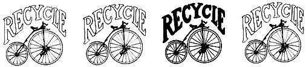

Coping with constantly rising prices – especially when living on a small, fixed retirement income – can be rough for an older couple. There are even times when the budget runs aground for younger folks . . . especially those who are saving every possible penny for something like next year's move to the farm.
Here's several little ideas that anyone can start using right now to cut day to day living expenses and – over a year's period – add a number of dollars (a penny saved is a penny earned) to the family kitty.
Best of all, these ideas are ecologically sound because each one makes better, extra or extended use of an item from our insane "throw away" system.
(1) After the last re-reading and answering, we cut up Christmas and other greeting cards. The clear, smooth pieces are kept in a holder in the kitchen to be used for shopping lists, notes to the milkman, etc. Of course, the Christmas wrappings and ribbons are carefully smoothed and put away for next year.
The vast quantities of junk mail which we all receive can be useful if it is printed on only one side. The other side is fine for figuring, making the first draft of a letter or for carbon copy.
(2) Hotels, motels, fairs, plant tours and trade exhibits are good sources of postcards, writing paper, book matches and free samples. Almost all our correspondence is written on stationery with hotel or motel headings and it amuses our friends to receive letters on a sheet of paper from Hawaii in an envelope from Minnesota, postmarked New York.
Postcards take a cent less postage than a letter, and most often we can say all we have to say on a card. After all, it isn't the length of the communication that counts but the frequency with which your friends hear from you.
(3) Glass containers in which food comes from the stores are excellent for storing other foods. Tall mayonnaise or coffee jars are good for keeping fruit juice in the refrigerator, or for storing sugar, salt, flour and cereals on your shelves. The products are better protected than in their original paper or cardboard boxes, and you can easily see when they're running low. Squatty jars are perfect for storing those little leftovers in the refrigerator.
The plastic tops of coffee cans can be used as coasters under glasses, and also to keep the feet of furniture from digging into your rug. Coffee cans themselves with holes punched in their bottoms and-perhaps-decorated with aluminum foil, make adequate temporary flower pots. Your plants can be free too, if you use the seeds of foods you have eaten; apples, oranges, grapefruit, green pepper and avocado are especially good – we have one avocado five feet high.
(4) Of course you save all reusable wrapping paper and string. The distaff side of our family even crocheted her self a summer handbag from the vari-colored twine from the bakery and drug store. The big, heavy bags in which we carry home our groceries become the containers in which we later carry out garbage. Heavy wrapping paper makes an excellent, dust-proof backing for framed pictures.
(5) Bed sheets which usually wear out in the middle can be cut down the center. The two outside edges, which get very little wear, can then be sewn together to make a new center. It takes a little time and work to hem the new outer edges (which were formerly in the middle), but it saves the price of a new sheet. And, in retirement, we have the time and not the money. After this, pillow slips can be made from the good sections of the worn sheet and finally, of course, they go into the rag bag for window washing and cleaning cloths.
Bath towels which also wear most in the middle can be cut in half to make hand towels. The good pieces are later made into face cloths and dish rags and, finally, they too can be used for cleaning and shoe polishing.
(6) Free pliofilm covers and plastic bags have many uses. Those from the dry cleaner serve as continued protection for your clothes and for storing blankets and sweaters. They also make good dust-covers for the ironing board, small suitcases and other items. We use them also in our linen closet and on book shelves. Spread the bottom end of the bag smoothly on the clean shelf, the bottom edge against the back wall, or sticking up an inch or so if you prefer. While most of the bag hangs down, stack your linens or books on the covered shelf, then bring the rest of the clear covering up in front of the stack, over the top, and tuck it down gently in back. The contents of the shelf are completely visible, yet protected from dust. It is a simple matter to lift off the top of the pliofilm when you want to remove a sheet or a book, and the covering can be kept clean with upward sweeps of a damp cloth or sponge.
Smaller pliofilm bags are good for covering fans, kitchen appliances, handbags, shoes or gloves. When we travel, almost every item in the suitcase is kept clean, safe from accidental spills and wrinkle-free in its individual plastic bag.
(7) An inexpensive but very effective window lock can be made by drilling a hole at one side of the center portion where the upper and lower sashes overlap. From the inside, drill the hole all the way through the top of the lower window sash, but only part way into the bottom of the upper sash behind it. A strong 2 1/2 or 3 inch nail inserted into the hole will keep the sashes from being separated. The window cannot be opened by an outsider (who cannot see the nailhead) although you can easily remove the nail and open the window from the inside. Should you wish to anchor it open a few inches, do your drilling with the window in the position desired, and the nail will hold it securely there, too.
|
 |
|
|